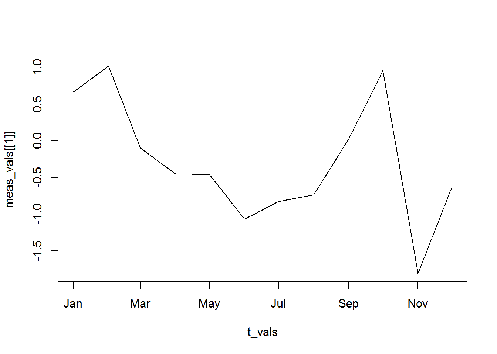
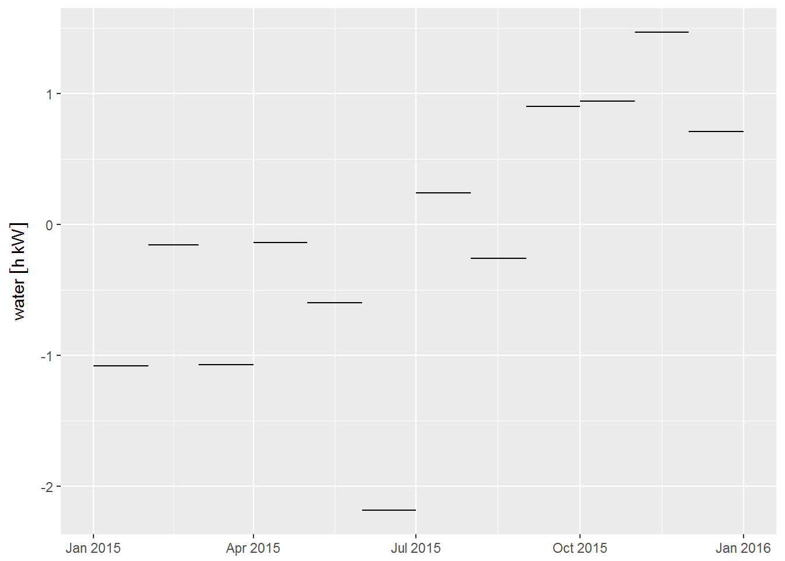

The energyintensity R package provides classes and functions to support the development of network-based energy intensity models using utility meter and infrastructure data. It is currently only available on Github:
remotes::install_github("ucd-cwee/energyintensity")library("energyintensity")The basic data required to build a spatially disaggregeted energy intensity model can be divided into two main categories:
With data of these two types, it is possible to model the cumulative energy required to serve different locations within the water utility distribution network.
Other types of data can also be integrated, both to improve the robustness of the model and to enable additional analytical features. These include spatial pressure zones, customer consumption data, and modeled flow values (e.g., from a hydraulic model).
Asset water meter data is typically obtained either from a utility SCADA system, which measures flow rates at regular intervals, or from aggregated records provided by the water utility. Energy meter data is similarly obtained from the water utility SCADA system, or as is often the case, from energy utility billing records. The data for each meter is structured as a time series, however the measurment resolution (e.g., regular 15-minute interval vs. irregular billing cycles) and type (e.g., rate vs. volume) may vary between the series. These issues and others, are discussed in greater detail in the vignette on Model Development.
The energyintensity package provides a meter_df class, which extends the base data.frame class with simple data validation, error checking, and visualization methods. A meter_df object is essentially a data.frame with one or more special fields added. These special fields fall into two categories:
A meter_df should have exactly one time index. It may consist of either point timestamps (see ?POSIXt), or time intervals with both a beginning and end point (see ??lubridate::interval).
The meter_df can have any number of measured values, although in practice there should probably be at least one. The main requirent of the measured value fields is that they must have units explicity set (see ?units::units and unit configuration).
Finally, any number of other ordinary fields can be included.
library("lubridate")##
## Attaching package: 'lubridate'## The following object is masked from 'package:base':
##
## datelibrary("units")
# create
x <- meter_df(time = seq.Date(as.Date("2013-1-1"),
by = "+1 month",
length.out = 12),
value = set_units(rnorm(12), kW))
# print
x## time value
## 1 2013-01-01 0.66270675 kW
## 2 2013-02-01 1.01305580 kW
## 3 2013-03-01 -0.10090109 kW
## 4 2013-04-01 -0.44980662 kW
## 5 2013-05-01 -0.46384759 kW
## 6 2013-06-01 -1.06903421 kW
## 7 2013-07-01 -0.82661019 kW
## 8 2013-08-01 -0.74017651 kW
## 9 2013-09-01 0.02669499 kW
## 10 2013-10-01 0.95292502 kW
## 11 2013-11-01 -1.80935934 kW
## 12 2013-12-01 -0.63001425 kW# plot
plot(x)
When multiple meter data frames are merged together (see Meter Data Reconciliation), additional attributes are attached, containing information that is useful for diagnostics and quality control.
Why extend data.frame, rather than a time series object?
The decision to base development around the data.frame was because of its flexibility, and due to the wide range of tools available for working with and manipulating them. I particular, time interval data, such as water or energy usage measured over a billing interval (e.g., 1.3 kWh used from Jan 12 - Feb 7) is often encountered in the development of energy intensity models. The common time series classes in R, such as ts, zoo, and xts do not support time interval data well. Future work may consider supporting other classes such as these.
Currently, all of the modeling functions in energyintensity will also take normal data.frame objects, as long as they follows the same basic structure.
ggplot2
If you prefer, ggplot2 can be used for plotting, however it does not currently support units. You can either convert the values to numeric, or load the ggforce package, which will enable support for units.
library("ggforce") # support for 'units'
library("ggstance") # geom_linerangeh (horizontal line intervals)
ggplot(pst1_water, aes(xmin = int_start(interval),
xmax = int_end(interval),
y = water)) +
geom_linerangeh()